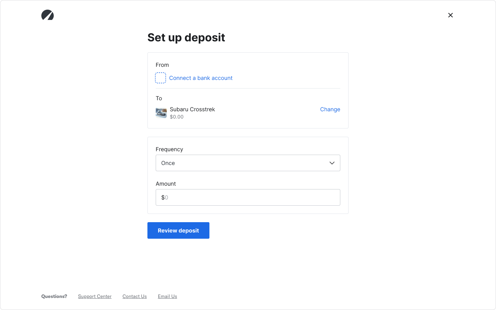
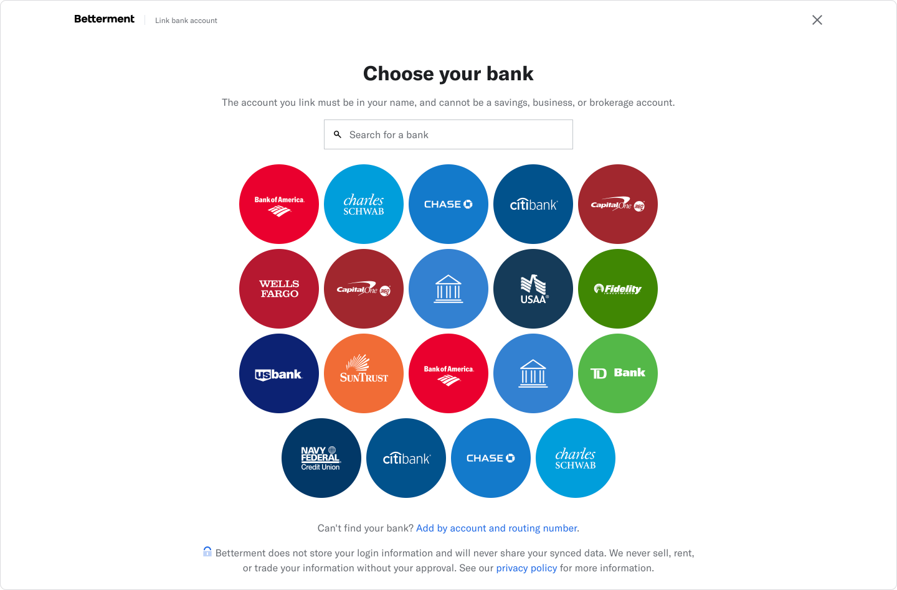
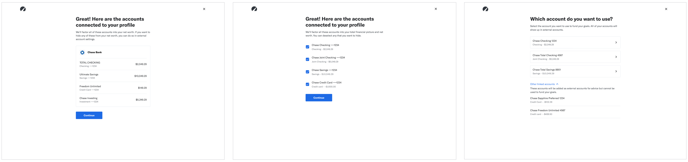
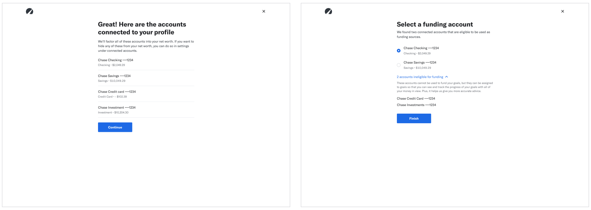

Betterment's bank aggregator, Quovo, was acquired by Plaid so, first and foremost, we had to make the great migration to Plaid.
This transition gave us a great opportunity to visually update the bank connecting experience, clarify the process and benefits, and become more transparent with data.
Background
A bank aggregator is a service that acts as a middleman between Betterment and your bank.
It allows Betterment to connect to your bank so you can deposit, transfer, withdraw between the two.
We were using Quovo for a few years. This is what the experience looked like:
A bit outdated 😅
I was itching to update this flow visually since I joined Betterment and here was my golden opportunity!
Problem
Connecting your bank account is a key part of the onboarding flow.
If you can’t connect your bank, you can’t fund your new account!
I found out that the highest drop off point in the flow is the screen below – only 25-30% make it past this step.
That’s wild!
I found out that the highest drop off point in the flow is the screen below – only 25-30% make it past this step.

After you create your account, we drop you in the deposit flow to start funding your new account.
New customers were getting stuck here because connecting your bank account is a burdensome task.
It’s a long flow with a lot of credentials and loading screens.
Ideally, I would’ve broken apart this screen specifically for onboarding.
But, my team’s main priority at the time was the bank connection experience.
I mention this drop off point because knowing this helped me design an experience that was much faster, clearer, and took the weight off a bit.
My team’s main priority at the time was the bank connection experience. I mention this drop off point because knowing this helped me design an experience that was much faster, clearer, and took the weight off a bit.
Mapping the flow
Based on our current experience and where we wanted to go with the Plaid updates, I created a flow to figure out the steps at a higher level.
We have different logic based on where the customer enters the flow so I wanted to make sure I captured that, seeing what steps are similar and where they differ.
Lots of lines and arrows!
Some notes:
There are 2 ways to connect: manually and instantly.
Manually means inputting your routing and account number and sending micro-deposits for verification.
Betterment doesn’t get any details of your account like balance and account name.
Instantly means entering your bank credentials into the bank aggregator.
Betterment gets more details like balance, account type, and more.
This allows Betterment to show a holistic view of your money.
Connected accounts can be defined as funding accounts.
The way our system works, the customer needs to designate a funding account for each Betterment account. It’s a bit complex internally, but we make it seamless for our customers 😇
Research
Before the design iterations, I wanted to mention some research I did.
This was done through user interviews, talking to our customer experience team, and backlogged support tickets. 🤫
Learnings about connecting a bank account in general:
Connecting your bank to a financial app is normal
There was zero hesitation when the screen to connect your bank account came up.
Some people look to manually connect as their first choice
This option is important! We need to find the right balance between instant and manual.
Learnings about the current Betterment experience:
Customers can’t find the manual connection option
It’s often difficult to find your bank
Funding accounts are a confusing concept
Finding the right balance
I wanted to prioritize the instant connection through Plaid because Betterment is able to get the most accurate data and give a holistic view of your finances.
This helps users get a one stop shop view of their net worth.
From the business perspective, having a larger view of customer finances helps us cross-sell Betterment products and create more value for customers.
But we also didn't want to discourage a manual connection because some times that's the only option for a bank.
From the business perspective, having a larger view of customer finances helps us cross-sell Betterment products and create more value for customers.
The previous design was a grid of bubbles.
Searching 2 dimensionally (horizontally and vertically) is very difficult compared to a vertical list.
The colors and shapes also add additional noise.
The manual option is often below the fold, but it's under all the bubbles!

😵💫
Plaid resolved this list issue by using a vertical list, but I decided to add an introduction page for a few reasons:
Show quick key benefits of connecting instantly
Manual option is much clearer under the primary CTA
Give them a little space before dropping them into Plaid – nice and easy steps ~
🤩
Funding accounts
In the old experience, the flow went straight back to the deposit flow after connecting on Quovo.
This was jarring as a user. The experience didn't tell you what just happened. It jumped a few steps and left the user confused.
So I decided to add 2 things: a summary of the connection and selecting a funding account.
Some issues I found from our CX team:
It’s unclear what account was connected because the names often came back as just numbers
Some customers only wanted to connect a few accounts from their bank
Funding accounts were unclear

These were some iterations I created based on those issues.
In my iterations, I focused a lot on trying to do 2 steps on 1 screen.
I quickly realized that wasn’t working based on user tests and feedback from my team.
It was too much cognitive overload, too many words, and splitting up steps into smaller ones feels faster!

Splitting up the screen so it feels faster and quicker to process each step.
Final experience
Learnings & reflection
Some concrete stats:
58% more investment account openers fund their account
Customers fund an account an average of 1.8 days faster
CX inquiries on bank connection went down
If interested, you can read more about the project on Plaid's blog.
This was a huge project. Our team worked on this for months to make the transition smooth for our customers.
I led all the design work and was proud of all the user experience updates I made (read: fought for) despite the main goal being the bank aggregator swap.
I was also very excited to have updated our flows with current components and styles!
I led all the design work and was proud of all the user experience updates I made (read: fought for) despite the main goal being the bank aggregator swap.